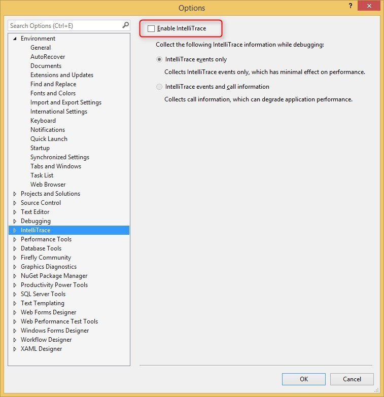

Configuring Visual Studio 2015
Moving to VS2015 is a smart move as it offers some new and useful capabilities.
However, we found that one of the default settings actually cause it to slow down, so we recommend to change it, like so:

Here are some more settings we are using – you might find some useful:

You can read more about the VS settings here
Help us improve, Edit this page on GitHub